Main Objective: Reach Rito Village (Mục tiêu chính: đến Làng Rito)
Xong Central Hyrule là tới lúc đi Hebra. Đây là vùng dài nhất trong cả lộ trình nên cứ từ tốn, không cần vội. Trước khi lên đường, hãy mở Tháp Quan Sát Lookout Landing rồi nhảy dù từ trên cao xuống — cách này nhanh hơn đi bộ rất nhiều.
Xem ảnh (1)

Điểm đáp đầu tiên là Đền Thờ Nhỏ Ishodag. Thể lực lúc này còn ít nên phải canh chừng, và luôn mở Dù Lượn trước khi chạm đất để không chết vì rơi.
Xem ảnh (1)
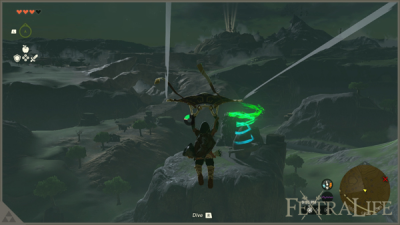
Clear Ishodag Shrine (Hoàn thành Đền Thờ Nhỏ Ishodag)
Bài thi của đền này xoay quanh Quạt — một Thiết Bị Zonai mà sau này bạn sẽ dùng rất nhiều.
Xem ảnh (1)
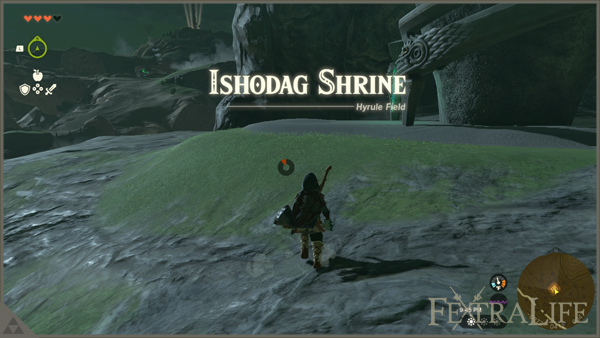
Thử thách 1: lấy chiếc Quạt đặt sẵn trong phòng, dựng thẳng đứng để gió thổi ngược lên trên. Mở Dù Lượn và để luồng gió đẩy bạn lên khu vực phía trên.
Xem ảnh (1)
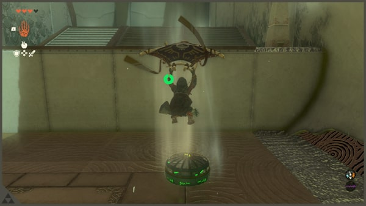
Thử thách 2: ghép Quạt vào tấm ván gỗ để làm chiếc bè, bật Quạt rồi chèo qua mặt nước.
Xem ảnh (1)
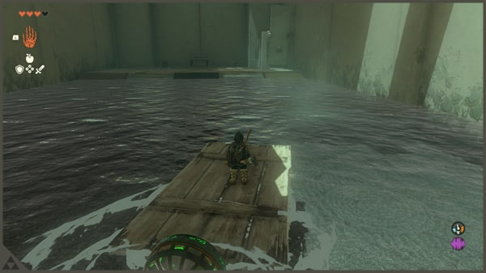
Thử thách 3: gắn Quạt vào mặt dưới tấm đá để nó đứng yên tại chỗ, dùng Xuyên lên tầng trên lấy rương chứa 1 Opal. Sau đó gắn 2 chiếc Quạt vào mặt dưới sàn thang máy, nhảy lên và đi tiếp. Nhận 1 Ánh Sáng Chúc Phúc, đồng thời mở luôn điểm dịch chuyển nhanh.
Xem ảnh (2)
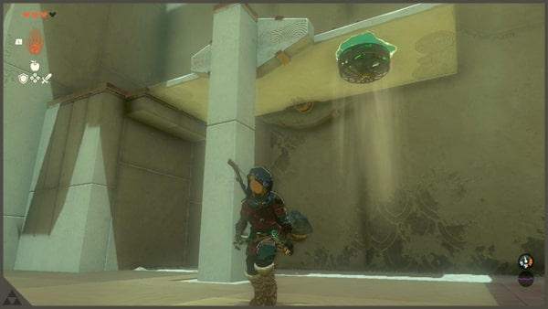
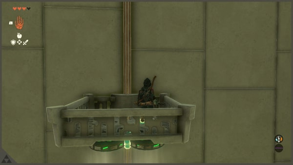
Reach Sherrene Stable (Đến Trạm Ngựa Sherrene)
Quay lại đường lớn, đi theo điểm đánh dấu nhiệm vụ và nhặt nguyên liệu dọc đường để dùng về sau. Mục tiêu tiếp theo là trạm ngựa đầu tiên trong lộ trình: Trạm Ngựa Sherrene.
Xem ảnh (1)
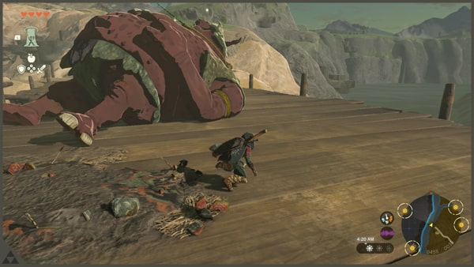
Trên cây cầu gỗ phía trước có một con Hinox đang ngủ. Không muốn đánh thì cúi thấp, đi chậm để khỏi đánh thức nó. Nếu là ban ngày thì có thể đi vòng hoặc đánh trực diện — nhắm vào mắt là nó gục rất nhanh.
Xem ảnh (1)
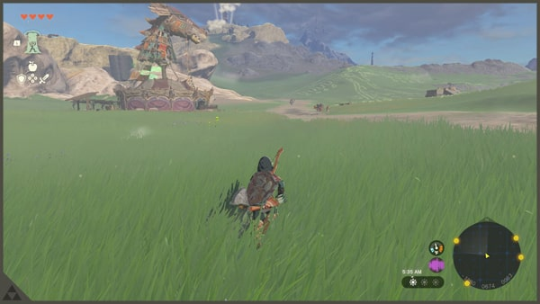
Qua cầu, nhìn thấy công trình có tượng ngựa trên nóc, đó chính là trạm ngựa. Nói chuyện với chủ trạm để biết cách hoạt động: bạn đăng ký những con ngựa bắt được ngoài đồng, mỗi lần đăng ký được 1 điểm để đổi vật phẩm cho ngựa, và có thể thuê giường để ngủ qua đêm.
Xem ảnh (1)
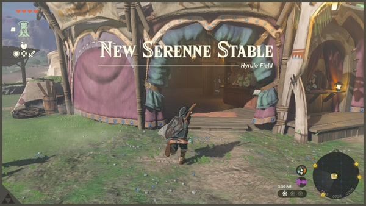
Giờ thử bắt một con ngựa gần đó: lại gần từ phía sau thật chậm, nhảy lên lưng rồi vỗ về cho tới khi nó chịu. Mang về trạm đăng ký là xong.
Clear Sinakawak Shrine (Hoàn thành Đền Thờ Nhỏ Sinakawak)
Đền này ngay gần trạm ngựa, làm luôn cho đủ Ánh Sáng Chúc Phúc. Bài thi khó hơn đền trước một chút nhưng vẫn dễ hiểu.
Xem ảnh (1)
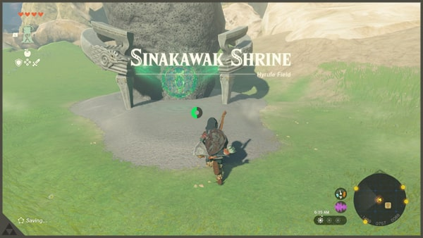
Thử thách 1: ghép tấm ván gần đó vào 1 Khinh Khí Cầu, rồi đặt một trong những chiếc đèn đá vào để tạo lửa — bạn có ngay một khinh khí cầu đưa lên tầng trên.
Xem ảnh (1)
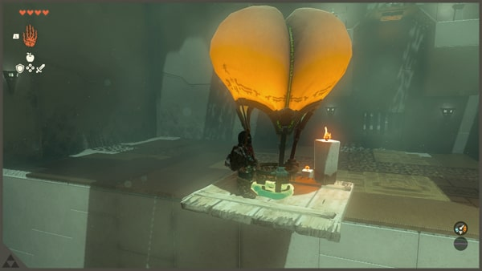
Thử thách 2: đặt một Khinh Khí Cầu ngay dưới công tắc của cánh cổng, để khi nó bay lên sẽ chạm vào công tắc và mở cửa.
Xem ảnh (1)
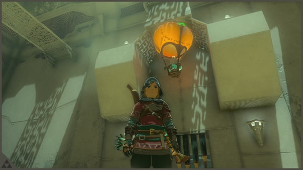
Thử thách 3: cần đưa cả quả cầu sắt nhỏ lẫn quả lớn lên tầng trên. Cách của tôi: gắn mỗi quả cầu vào một Khinh Khí Cầu riêng, canh sao cho chúng dừng ở trần thấp chứ không phải trần cao nhất. Khi đã lên tầng trên, dùng Siêu Tay với tới và đặt từng quả vào ô tương ứng. Phòng nhỏ bên cạnh có rương chứa 1 Opal; phòng kế tiếp là 1 Ánh Sáng Chúc Phúc.
Xem ảnh (2)

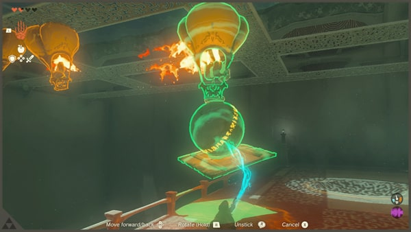
Locate and Activate Lindor's Brow Skyview Tower (Tìm và kích hoạt Tháp Quan Sát Lindor's Brow)
Từ đền nhìn lên là thấy tháp nằm trên núi. Cưỡi ngựa đến chân núi cho nhanh.
Xem ảnh (1)
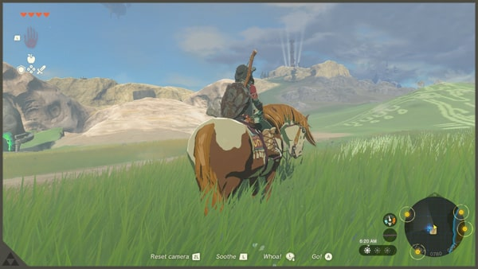
Muốn bắc qua khoảng trống, cách đơn giản nhất là ghép 2–3 tấm ván gỗ thành cây cầu dẫn tới chân tháp. Sau đó leo tường lên; tôi dùng thêm 1 chiếc Quạt để đẩy mình lên cho lẹ.
Xem ảnh (2)
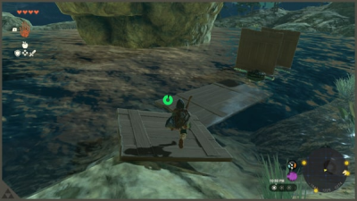
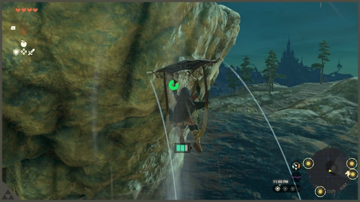
Kích hoạt tháp để cập nhật bản đồ, rồi từ đây nhảy dù thẳng tới điểm tiếp theo.
Xem ảnh (1)
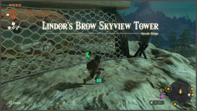
Locate the Lucky Clover Gazette (Tìm Lucky Clover Gazette rồi đến Làng Rito)
Từ tháp, phóng lên rồi lượn về phía vùng tuyết. Đây là cú lượn dài, canh thể lực cho vừa là qua được bên kia — nhanh hơn đi bộ rất nhiều.
Xem ảnh (2)
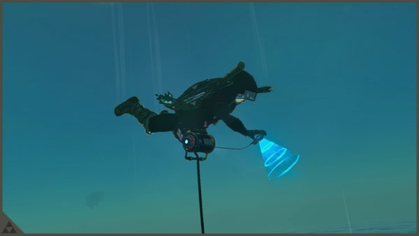

Chạm đất thì đi theo điểm đánh dấu nhiệm vụ về hướng Tây Bắc. Trời lạnh lại kéo tới, nhớ mang theo Ớt Xào; quanh đây có sẵn Nồi Nấu nếu cần nấu thêm. Đi tiếp sẽ có đoạn phim Trăng Máu: quái đã bị đánh bại hồi sinh, quặng đã đập và vũ khí đã rơi xuất hiện lại, còn nấu ăn thì hay đạt "Thành Công Tuyệt Vời".
Xem ảnh (2)
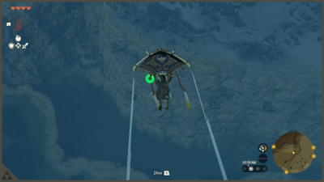
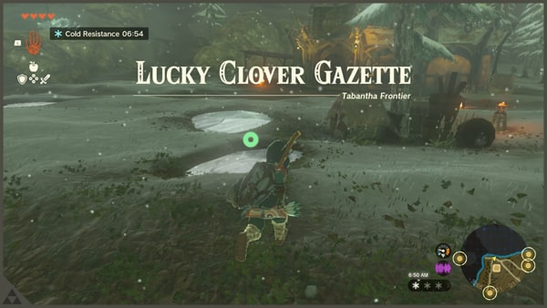
Không xa nữa là Lucky Clover Gazette — không cần nói chuyện với người bên trong. Việc cần làm là tới cây cầu đã gãy gần đó, nơi có đống lửa đang cháy. Tìm quanh để nhặt một quả Thông Hylian rồi thả vào đống lửa; vụ nổ tạo ra luồng khí bốc ngược, mở Dù Lượn và để nó đưa bạn sang bờ bên kia.
Xem ảnh (2)
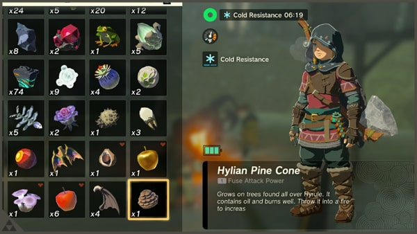
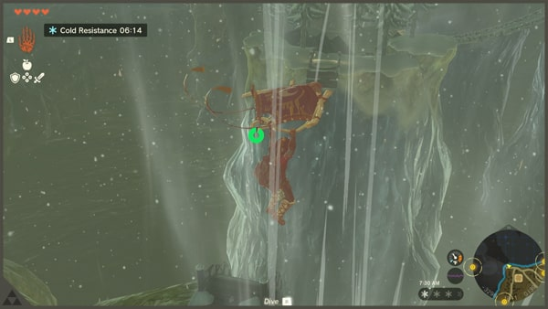
Chúc mừng, bạn đã đến Làng Rito. Tới Tượng Nữ Thần ở cổng làng dâng 4 Ánh Sáng Chúc Phúc để đổi lấy 1 Bình Máu. Ghé tiệm giáp mua Áo Snowquill — món này chống lạnh rất tốt cho cả vùng Hebra về sau. Thiếu Rupee thì bán bớt đá quý (Amber, Opal, Ruby) và giữ Flint lại.
Xem ảnh (2)
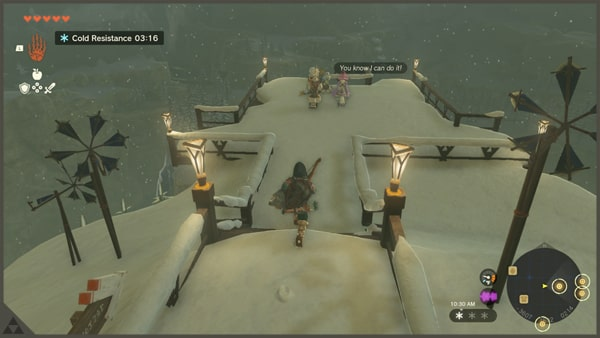
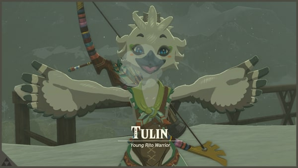
Sau đó lên khu phía trên làng tìm Tulin cùng bố mẹ cậu bé. Teba sẽ bảo bạn đi gặp Harth. Trước khi đi, làm luôn Đền Thờ Nhỏ Gatakis ở chân làng để có điểm dịch chuyển nhanh.
Xem ảnh (1)
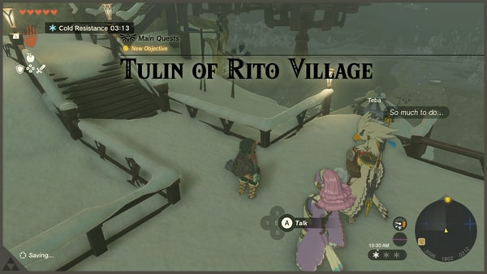
Clear Gatakis Shrine (Hoàn thành Đền Thờ Nhỏ Gatakis)
Đền nằm ngay dưới chân làng, bài thi chủ yếu là tận dụng gió — kỹ năng bạn sẽ dùng suốt vùng này.
Xem ảnh (1)
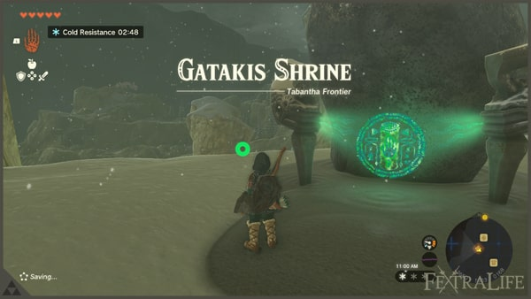
Thử thách 1: mở Dù Lượn cưỡi luồng gió, né tia laser bằng cách bay qua ô trống bên phải.
Xem ảnh (1)
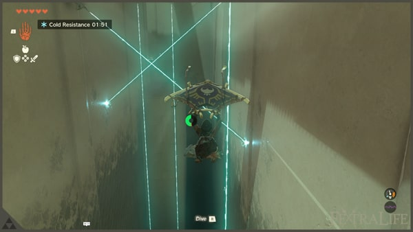
Thử thách 2: đi xuống khu dưới nhờ luồng gió ngược, vượt bức tường xoay có ô hở, đập vỡ sàn băng bằng cách giậm lên, rồi qua khoảng sân rộng có Construct canh gác. Lấy rương gần nhất (1 Cung Construct mạnh). Còn một luồng gió nữa đưa bạn lên tầng trên và kết thúc đền.
Xem ảnh (2)
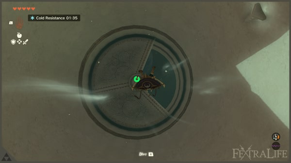
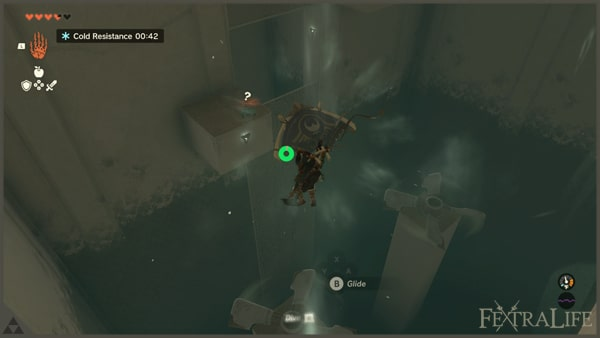
Nhận 1 Ánh Sáng Chúc Phúc.
Activated Rospro Pass Skyview Tower (Kích hoạt Tháp Quan Sát Rospro Pass)
Từ Làng Rito, dùng Xuyên lên đỉnh cao nhất của làng — ở đó có một cột đá cao chót vót. Từ trên đỉnh nhìn xuống, bạn sẽ thấy tháp và chỗ của Harth nằm cùng một hướng.
Xem ảnh (1)
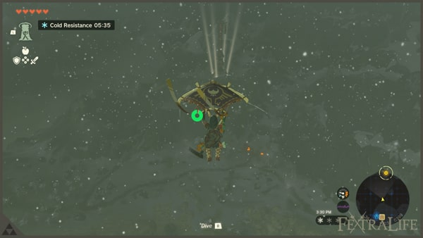
Lượn tới tháp, bắn tên gắn Quả Lửa để đốt dây leo bịt cửa, rồi vào kích hoạt và cập nhật bản đồ.
Xem ảnh (1)
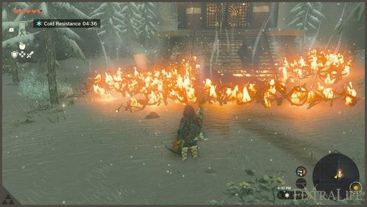
Talk To Harth (Nói chuyện với Harth)
Lượn tới chỗ Harth — nơi có hai đống lửa làm mốc. Anh ấy sẽ chỉ đường: Tulin đã đi tới Hang Hebra South Summit.
Xem ảnh (1)
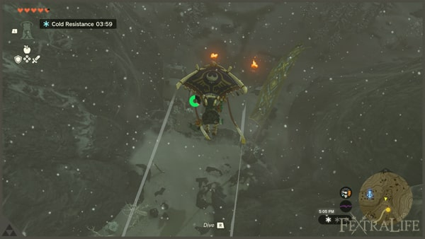
Trước khi đi, nhặt nguyên liệu quanh đây và nấu bổ sung Ớt Xào cho chắc.
Side Stops in Hebra (Các điểm phụ nên ghé)
Lộ trình 31 bước có vài điểm không bắt buộc nhưng đáng ghé, vì chúng mở nhiệm vụ phụ và điểm dịch chuyển nhanh cho cả vùng.
Giọt Lệ Rồng và Ký Ức: trên đường đi bạn sẽ thấy điểm đánh dấu hình vẽ mặt đất. Ghé xuống đúng vị trí, tìm giọt nước phát sáng để xem một đoạn Ký Ức. Đây là cách mở dần cốt truyện quá khứ, không ảnh hưởng tiến trình chính.
Forgotten Temple và Impa: đi về phía dãy Hebra Mountains để tới Forgotten Temple. Impa đang đợi bên ngoài Đền Thờ Nhỏ Mayausiy gần đó; bà giao cho bạn việc tìm các hình vẽ mặt đất. Làm xong Đền Thờ Nhỏ Mayausiy là có thêm một điểm dịch chuyển.
Đền Thờ Nhỏ Makurukis: ghé làm đền này, đồng thời đi theo điểm đánh dấu của nhiệm vụ Regional Phenomena để không lạc hướng.
Meeshy và Misko's Treasure: nói chuyện với Meeshy quanh khu Làng Rito, cô ấy mở ra nhiệm vụ Misko's Treasure — chuỗi đi tìm kho báu giấu trong hang.
Flight Range và Kaneli: ghé trường bắn ở Flight Range, nói chuyện với Kaneli để nhận thử thách bắn cung, thắng thì có phần thưởng.
Molli the Fletcher: nhiệm vụ phụ nhỏ ở làng, hoàn thành đổi lấy 10 Mũi Tên — rất đáng làm vì cả vùng này bạn bắn tên liên tục.
Eye of the Storm: đây là mốc trên mây dẫn vào Đền Thờ Gió; phần cuối của vùng sẽ đưa bạn lên tới đó.
Clear Sahirow Shrine (Hoàn thành Đền Thờ Nhỏ Sahirow)
Quay lại Tháp Quan Sát Rospro Pass, nhảy dù xuống đền gần nhất — từ trên cao nhìn thấy nó phát sáng. Đây cũng là cách xác định Hang Hebra South Summit về sau.
Xem ảnh (1)
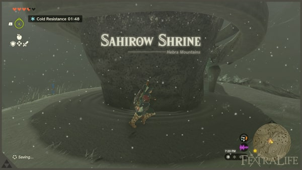
Thử thách 1: né các tia laser, cần thì nhảy hoặc cúi, rồi đi tiếp.
Xem ảnh (1)
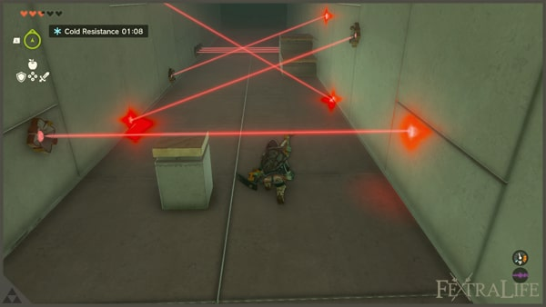
Thử thách 2: dùng Xuyên lên bệ di động, rồi dùng Siêu Tay đặt khối sắt chắn ngay chỗ laser bắn để mở cửa sắt bên kia. Lấy rương chứa 1 Thuốc Cay.
Xem ảnh (1)
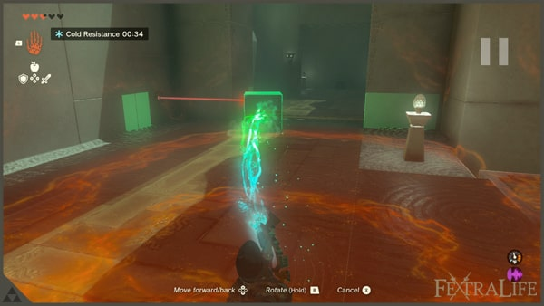
Thử thách 3: màn tiếp theo có các cụm laser di động. Né lần lượt; cụm thứ ba gần đền nhất thì nhìn xem laser gắn ở đâu — dùng Xuyên để đi qua. Nhận 1 Ánh Sáng Chúc Phúc.
Xem ảnh (1)
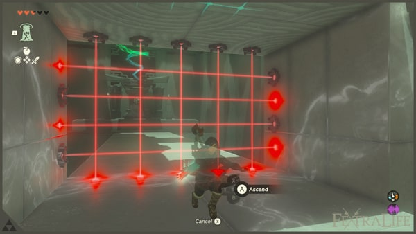
Get Through Hebra Summit Cave (Xuyên qua Hang Hebra South Summit)
Cửa hang nằm ngay dưới Đền Thờ Nhỏ Sahirow, có đống lửa lớn làm mốc. Đi theo đường chính, ghé hồ nhỏ bắt 1 Chillfin Trout, rồi tới khoảng sân rộng có luồng gió thổi lên từ mặt đất.
Xem ảnh (1)
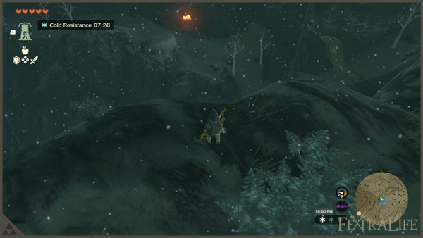
Đạp vỡ lớp băng để xuống dưới nhặt Bright Cap, Chillshroom, Amber, Rock Salt; sau đó dùng Xuyên quay lại tầng trên và đi theo luồng gió.
Xem ảnh (1)
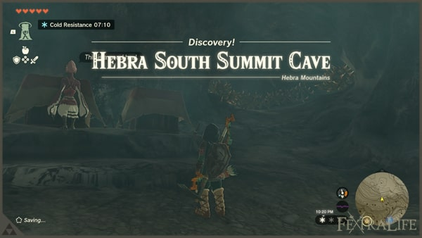
Có một lối vào khu đầy cột đá quý — đập hết để lấy Luminous Stone, nhưng coi chừng một con Horriblin phục kích, dùng cung bắn khi nó bám trên cao. Khu tiếp theo có đống lửa chưa cháy, nhặt Glowing Cave Fish, Chillfin Trout và Flint. Nhìn lên sẽ thấy phải leo; trước khi leo nên vạch sẵn đường và đốt hết bụi gai chắn lối.
Xem ảnh (1)
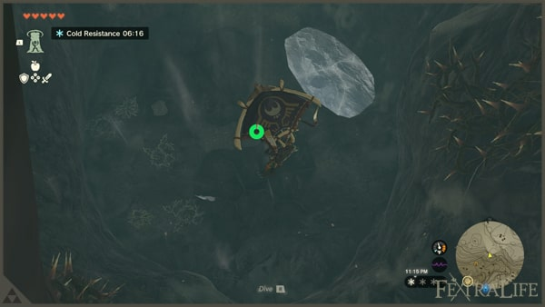
Có hai nhánh để khám phá. Nhánh đầy gai: giết Bubbulfrog để lấy 1 Ngọc Bubbul. Quay lại nhánh còn lại, đi tiếp sẽ gặp Stone Pebblit — dùng vũ khí cận chiến hệ đá để lấy Amber bán lấy tiền.
Xem ảnh (1)
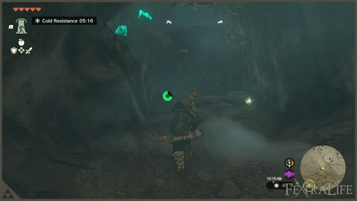
Sâu bên trong hang, bạn sẽ nghe giọng nói từ Ark — con tàu Zonai trên trời — yêu cầu gỡ các ổ khóa quanh thân tàu và mở cửa sập để lối đi lên được giải phóng. Đây là chỉ dẫn cho đoạn leo lên Đền Thờ Gió ở cuối vùng.
Xem ảnh (1)
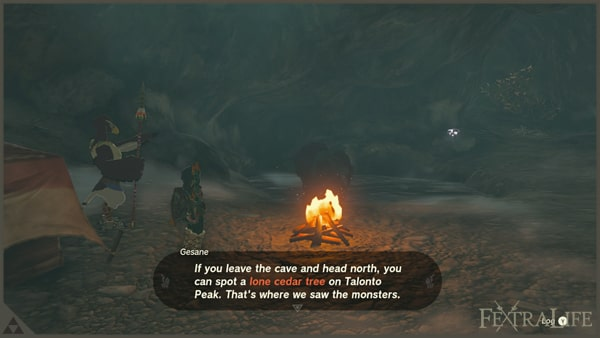
Cuối cùng gặp Gesane đang canh trại. Anh ta nói Tulin đã ra ngoài và đi lên đỉnh Talonto, mốc nhận biết là cây tuyết tùng. Nấu bổ sung món chống lạnh ở đây nếu cần.
Find Tulin in Talonto Peak (Tìm Tulin ở đỉnh Talonto)
Ra khỏi hang, nhặt Ice Fruit để dùng sau. Trên đường có trại do Bokoblin canh — đánh úp để lấy đồ. Gần một mảng tàn tích bay lơ lửng có Boss Bokoblin cùng đám lính tuần tra; có thể đánh hoặc lẻn qua.
Xem ảnh (1)
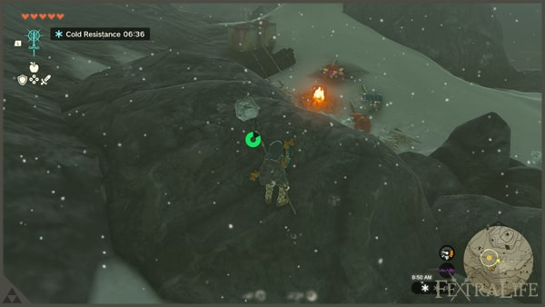
Đi theo đường núi, leo lên là tới đỉnh có cây tuyết tùng — Tulin đang ở đó.
Xem ảnh (1)
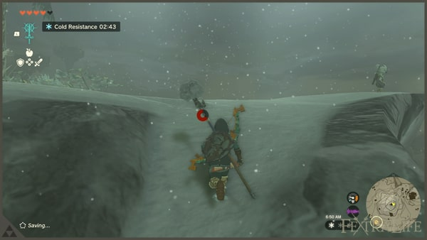
Cậu bé nhờ bạn lấy lại cây cung bị Aerocuda tha mất. Ghép Mắt Keese vào mũi tên rồi bắn là xong; không có Mắt Keese thì ngắm tay cũng được, và có thể đập thùng quanh đó để nhặt thêm tên. Lấy lại cung xong sẽ có thêm một đợt Bokoblin kéo tới — cùng Tulin dọn sạch.
Sau đó cả hai biết tin Zelda đã đi lên cơn bão phía trên, nên phải lên đỉnh Hebra.
Get Tulin's Bow (Lấy lại cây cung của Tulin) và Reach The Top of Hebra Peak (Lên đỉnh Hebra)
Từ đây bắt đầu màn leo trèo và lượn dài nhất vùng. Để ý mảng tàn tích vàng gần đó — nó rơi từ trên trời xuống, và sau này bạn sẽ hiểu vì sao.
Xem ảnh (1)
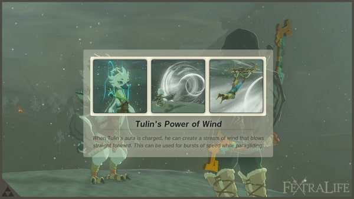
Lượn tới mảng gần nhất, trên đỉnh có rương chứa 1 Kiếm Zonai. Đi tiếp theo chuỗi tàn tích; tới cuối chuỗi đầu tiên thì đừng đánh đám quái đông đúc, cứ lượn sang chuỗi tiếp theo để lên tầng trên của núi.
Xem ảnh (2)


Mẹo quan trọng: trong lúc lượn hãy bấm gọi luồng gió của Tulin, bay xa hơn hẳn — cả vùng này bạn sẽ dùng nó liên tục.
Xem ảnh (2)
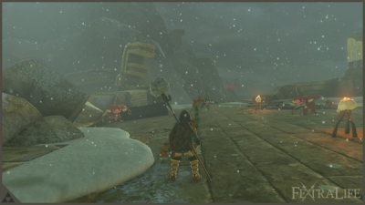
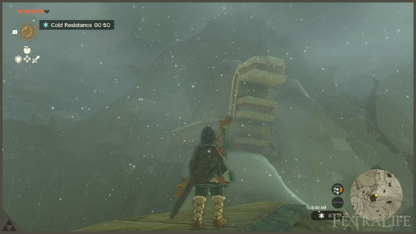
Tới chuỗi mới thì leo lên theo hướng trong ảnh. Một trong những bệ đầu tiên có Soldier Construct II, xử lý gọn rồi đi tiếp, kết hợp leo núi (đá không trơn thì leo được). Canh thể lực, đừng nhảy liều vì hụt chân là chết. Cứ thế leo tới đỉnh Hebra.
Xem ảnh (1)
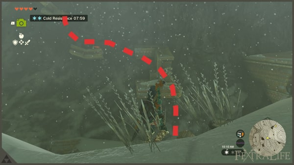
Reach The Peak of Rising Island Chain (Đến đỉnh Chuỗi Đảo Rising)
Ở đỉnh có Huck đang đợi. Cậu ấy cũng động viên Tulin thử sức xem trong mây có gì.
Xem ảnh (1)
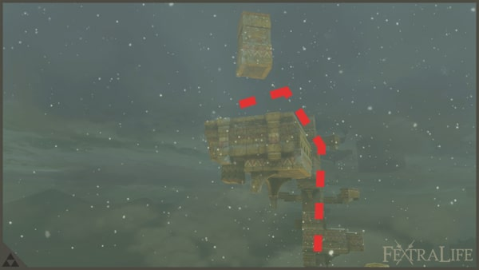
Mục tiêu đầu tiên là khối đá treo lơ lửng — dùng Xuyên để lên cao. Tới bệ thứ hai dựng đứng thì leo tay; lên đỉnh sẽ thấy bệ cần lượn tới, nhớ dùng luồng gió của Tulin để bay xa. Rồi lại dùng Xuyên để vào phần trên của Chuỗi Đảo Rising. Những mảng tàn tích bạn thấy trên núi Hebra thực chất là một phần của chuỗi đảo này rơi xuống.
Xem ảnh (1)
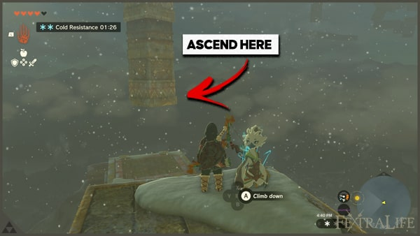
Phía trước có một con thuyền bay và một đền gần đó. Nhảy lên nóc thuyền sẽ được bật lên rất cao — đây là cách di chuyển chính trong chuỗi đảo, nhớ kỹ. Dùng thuyền để tới đền gần nhất.
Xem ảnh (1)
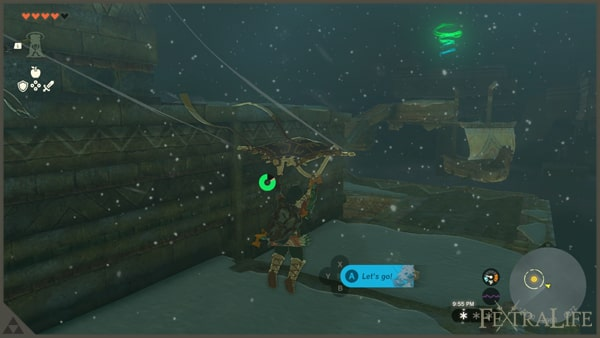
Clear Mayaumekis Shrine (Hoàn thành Đền Thờ Nhỏ Mayaumekis)
Đền này cũng dạy bạn cách dùng thuyền. Bài thi chủ yếu là bắn công tắc để mở cửa chớp.
Xem ảnh (1)
Thử thách 1: bắn công tắc bằng cung, cửa chớp mở ra, đi tiếp.
Xem ảnh (1)
Thử thách 2: trước khi nhảy lên thuyền có Soldier Construct II, xử lý trước. Nhảy lên thuyền kế tiếp và để ý chiếc đang bay vòng — lượn sang đáp lên nó. Mục tiêu là tới chiếc thuyền xa nhất, bắn công tắc mở cửa chớp phía dưới. Vào trạng thái Ngưng Thời Gian khi nhảy từ chiếc thuyền xa nhất sẽ dễ trúng hơn. Xong thì nhảy sang chiếc thuyền song song chỗ cửa mở.
Xem ảnh (3)
Nhận 1 Ánh Sáng Chúc Phúc.
Post Mayaumekis Shrine (Sau Đền Thờ Nhỏ Mayaumekis – vượt chuỗi đảo trên mây)
Đi qua sàn băng rồi bắt đầu nhảy từ đảo này sang đảo khác, dùng lại bài học từ đền Mayaumekis.
Xem ảnh (2)
Qua ba đảo đầu, tới một chiếc thuyền và nhảy lên. Điểm dừng tiếp theo là một khối treo mà bạn có thể Xuyên lên — nhìn ảnh để nhận ra. Khối này có nhiều nhũ băng; chỗ cho Xuyên hơi hẹp, chui qua tường rồi xử lý Soldier Construct II đang đợi. Mở rương gần đó lấy 3 Nồi Di Động. Cạnh bạn có một lỗ khác, bắn vỡ nhũ băng để chui qua, rồi lại dùng Xuyên để đi tiếp.
Xem ảnh (1)
Lượn sang nhóm đảo kế, điểm tới là chiếc thuyền nằm dưới một hòn đảo có sàn băng. Đập sàn băng, vào thuyền để bay lên và lượn tiếp. Để ý khối cấu trúc trông như cái lồng, cửa bịt bằng nhũ băng — bắn vỡ bằng tên. Đây là nơi nhiều Aerocuda bay vòng. Đập sàn băng dưới chân để lộ thuyền, dùng nó phóng xuyên qua lồng; trong lồng có rương 10 Mũi Tên và 3 Chillshroom, đập thùng để thêm tên.
Xem ảnh (2)
Để đi tiếp, chú ý chiếc thuyền bị chặn bởi khối đá. Dùng Siêu Tay đặt một khối đá lên thuyền để khi bay lên nó tự phá chướng ngại từ bên trong. Vào thuyền tới đảo kế, lại đập sàn băng và lượn theo hướng trong ảnh.
Xem ảnh (2)
Chỗ nghỉ gần nhất có Nồi Nấu: bắt Chillfin Trout dưới hồ, hái Chillshroom, dùng 1 Flint với củi để nhóm lửa, nấu bổ sung món hồi máu và món chống lạnh. Nghỉ một chút cũng được.
Xem ảnh (2)
Đoạn sau dễ thở hơn: tới hòn đảo nối lên khu trên. Có Aerocuda và Soldier Construct II đang đánh nhau, nhảy vào dọn để lấy đồ. Ở đảo kế, cây cầu nối sẽ sập khi Link bước lên — nên lưu game trước cho chắc. Một Soldier Construct II phục kích, xử lý ngay.
Xem ảnh (1)
Đảo tiếp theo khó hơn: 2 Soldier Construct II và 1 Captain Construct I biết dùng Bom Thời Gian (thiết bị Zonai phát nổ sau vài giây). Vừa đánh vừa để ý hướng bom bay, ưu tiên dọn con nhỏ trước. Có khối đá chắn, phá bằng vũ khí hệ đá hoặc dùng Bom Thời Gian có sẵn.
Xem ảnh (1)
Chỗ có nhiều Thiết Bị Zonai xếp trên kệ tôi gọi là "xưởng". Phá khối đá, xuống phòng dưới lấy rương chứa 1 Pin Zonai Cỡ Lớn. Quay lại xưởng, muốn lên đảo trên thì ghép một khinh khí cầu: 2 bệ kim loại nối bằng 1 tấm ván, 2 Khinh Khí Cầu chồng lên nhau cho cân, cấp lửa bằng 2 Bộ Phun Lửa. Bay tới khi đủ tự tin thì nhảy sang đảo trên.
Dùng Xuyên lên khối treo để đi tiếp. Sắp tới đỉnh rồi. Lại có một loạt thuyền để sang đảo có đền — làm đền này trước đã.
Clear Kahatanaum Shrine (Hoàn thành Đền Thờ Nhỏ Kahatanaum)
Đền này coi như phần thưởng: vào lấy rương 1 Pin Zonai Cỡ Lớn, rồi nhận 1 Ánh Sáng Chúc Phúc. Mục đích chính của nó là làm điểm dịch chuyển nhanh cho chặng sau.
Xem ảnh (1)
Clear Wind Temple (Hoàn thành Đền Thờ Gió và hạ Boss Colgera)
Quay lại chuyện thời tiết: ở độ cao này Link sẽ chết cóng. Đây là lúc dùng Áo Snowquill đã mua.
Dịch chuyển về Đền Thờ Nhỏ Gatakis, tới Tượng Nữ Thần đổi 4 Ánh Sáng Chúc Phúc lấy 1 Bình Máu. Ghé làng mua Áo Snowquill (áo là đủ chống lạnh), nấu bổ sung món nếu cần. Xong thì dịch chuyển về Đền Thờ Nhỏ Kahatanaum và đi tiếp.
Lại dùng những chiếc thuyền bay vòng để lên cao, lặp lại cho tới khi thấy bệ giống bàn thờ — đó là chiếc thuyền áp chót. Bật lên chiếc thuyền cao nhất là tới đỉnh mây bão — chính là Eye of the Storm. Nhảy vào cơn bão, Đền Thờ Gió hiện ra. Đáp xuống đền, chạm vào bệ xanh để mở điểm dịch chuyển.
Xem ảnh (4)
Đền Thờ Gió có trang hướng dẫn riêng; đây là Đền Thờ đầu tiên nếu bạn đi theo lộ trình này. Sau khi phá xong các ổ khóa và mở cửa sập, bạn sẽ đánh Boss Colgera. Hạ được nó, bạn nhận 1 Bình Máu và Lời Thề của Tulin, Hiền Giả Gió sau đoạn phim cơn bão tan biến.
Xem ảnh (2)
Từ đây, Tulin sẽ đồng hành cùng bạn đến hết hành trình.
Xem ảnh (2)
Mẹo: luôn nấu Ớt Xào trước khi vào vùng tuyết; tiết kiệm Pin Zonai; mang Hạt Sáng khi vào hang tối; dự trữ vũ khí cận chiến vì rất dễ gãy; dùng Xuyên để đi tắt các mốc cao.
Vùng Hebra — chi tiết hoàn tất, phủ đủ 31 bước của lộ trình.